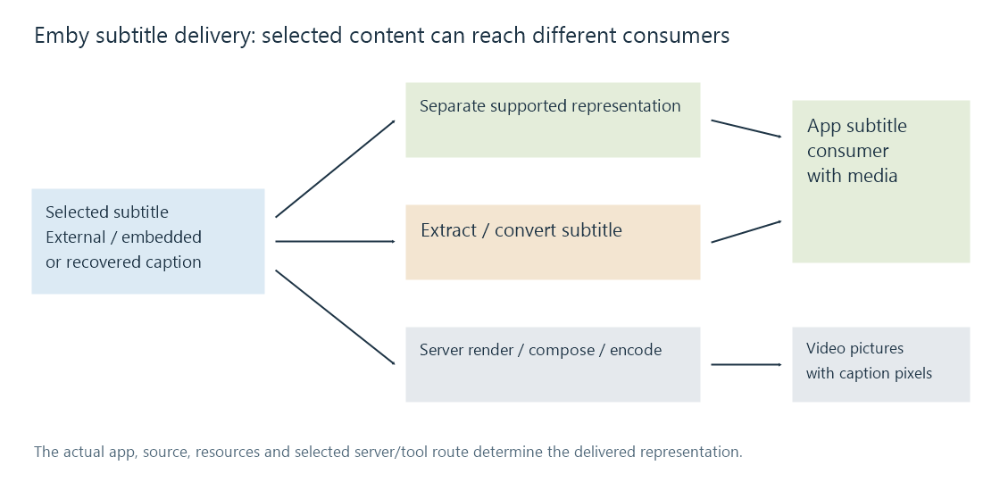

Subtitle delivery in Emby
Emby's subtitle delivery route connects the selected source track to an app-supported representation or a rendered video output.
An Emby session selects an audio/video source and a subtitle resource. The subtitle can be external, a container track or a recovered caption service. The next question is how the selected app can receive and present that content.
A subtitle's source location does not determine the final delivery route. An embedded text track can be extracted for separate delivery; an external styled script can instead be rendered upstream when that route requires it.
Three different outputs
| Route | What reaches the app |
|---|---|
| Supported separate presentation | Subtitle data the app can render with the media |
| Subtitle conversion/extraction | Another accepted subtitle representation retaining the selected content |
| Server composition and video encoding | Video pictures containing the subtitle pixels |

These outputs have different consequences for switching tracks, preserving styles and changing appearance. Permanent pixels belong to that output video version, even if the original subtitle remains a separate track in the library.
The video decision and subtitle decision are related, not identical
Emby's playback documentation describes Direct Play, Direct Stream and transcoding. Compatible video can remain unchanged while a subtitle is extracted or converted separately.
A server burn-in route instead needs decoded pictures for composition and a suitable encoded output. A small subtitle file can therefore introduce substantial video work even when its text itself is quick to read.
The public SDK processing-step descriptions distinguish operations such as subtitle overlay, text-to-video conversion and style stripping. Those semantic steps are evidence of what kinds of work the model can describe, not proof that every session performs them.
Configuration and resources reach the consumer
Text can need global styles and fonts; graphics can need palette/object state and display geometry. Cue times must map to the media programme timeline.
For app rendering, usable resources belong at the app's subtitle consumer. For server rendering, they belong where the server draws/composes the presentation. A resource preserved somewhere in the original container is not automatically available at every downstream boundary.
The selected app/platform, source representation, requested appearance and server/tool build determine the actual route. Compare its output with the selected resource's content, timing and visual requirements rather than treating “subtitles enabled” as one universal operation.